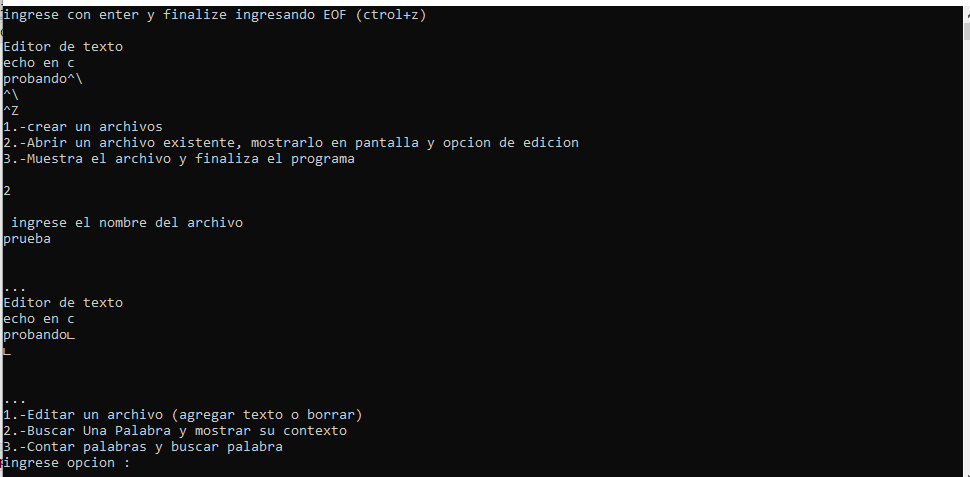
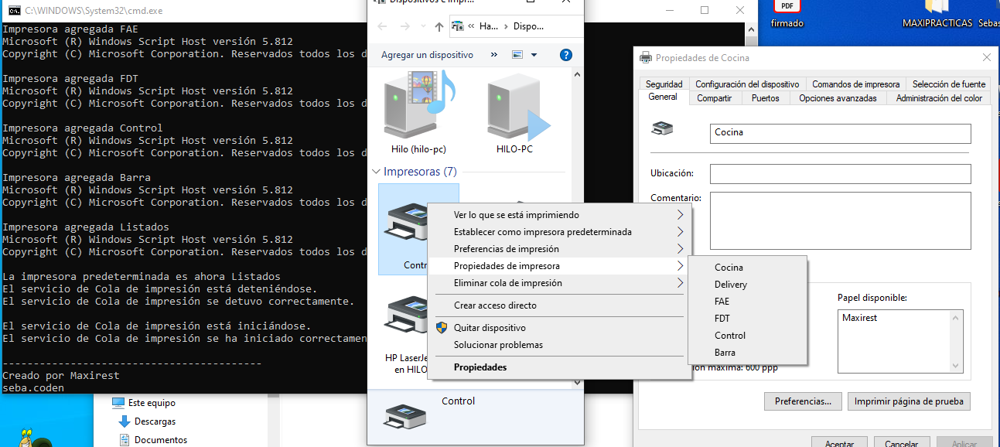
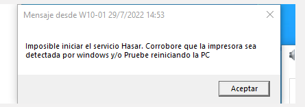

Proyectos
Editor de texto en C
Pequeño editor de texto codeado en C con las funciones de editar, remplazar y agregar
año 2020 para la materia "Programación"

Instalador de impresoras
Consiste en un archivo.bat que se encarga de instalar las impresoras utilizadas por el sistema Maxirest
año 2022 en Maxirest SRL

Activar servicio Hasar
Pequeño archivo.bat que se encarga de mantener activo el servicio Hasar utilizado por impresoras fiscales
año 2022 en Maxirest SRL
